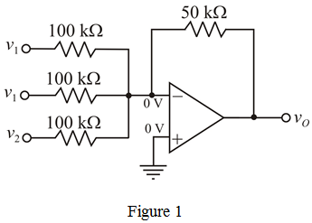

Step 1:
Number of input-terminals at inverting terminal is 3. Each terminal have one  resistor and the value of feedback resistor is .
resistor and the value of feedback resistor is .
Signal  is connected to two inputs and signal
is connected to two inputs and signal  is connected to third input.
is connected to third input.
The circuit diagram of weighted inverting summing amplifier with three inputs is shown in Figure 1.

Step 2:
The voltage at non-inverting terminal is zero.
OP-amp is ideal type. The voltages at inverting and non-inverting terminal of the op-amp are same.
Apply Kirchhoff’s current law at inverting terminal.
Therefore, the output voltage,  is .
is .
Step 3:
The output voltage expression is,

Substitute  for
for  , and for
, and for  in the equation.
in the equation.
Therefore, the output voltage,  is
is  .
.